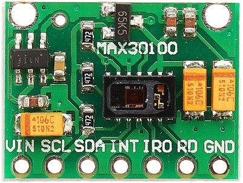
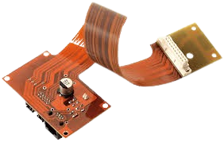
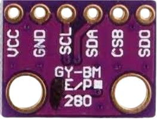

Quer saber mais sobre nosso equipamento? Abaixo está um breve resumo!

Max30100:
Monitora a frequência cardíaca
por meio da iluminação e
captação do sangue quando bombeado.

Flexible Pcb:
Responsável por conectar todo
o circuito, é graças a ele que é
possivel a união dos sensores
na pulseira.

Bmp280:
Verifica a pressão e a
temperatura a partir da
conversão da suas variações
e converte em sinais elétricos.